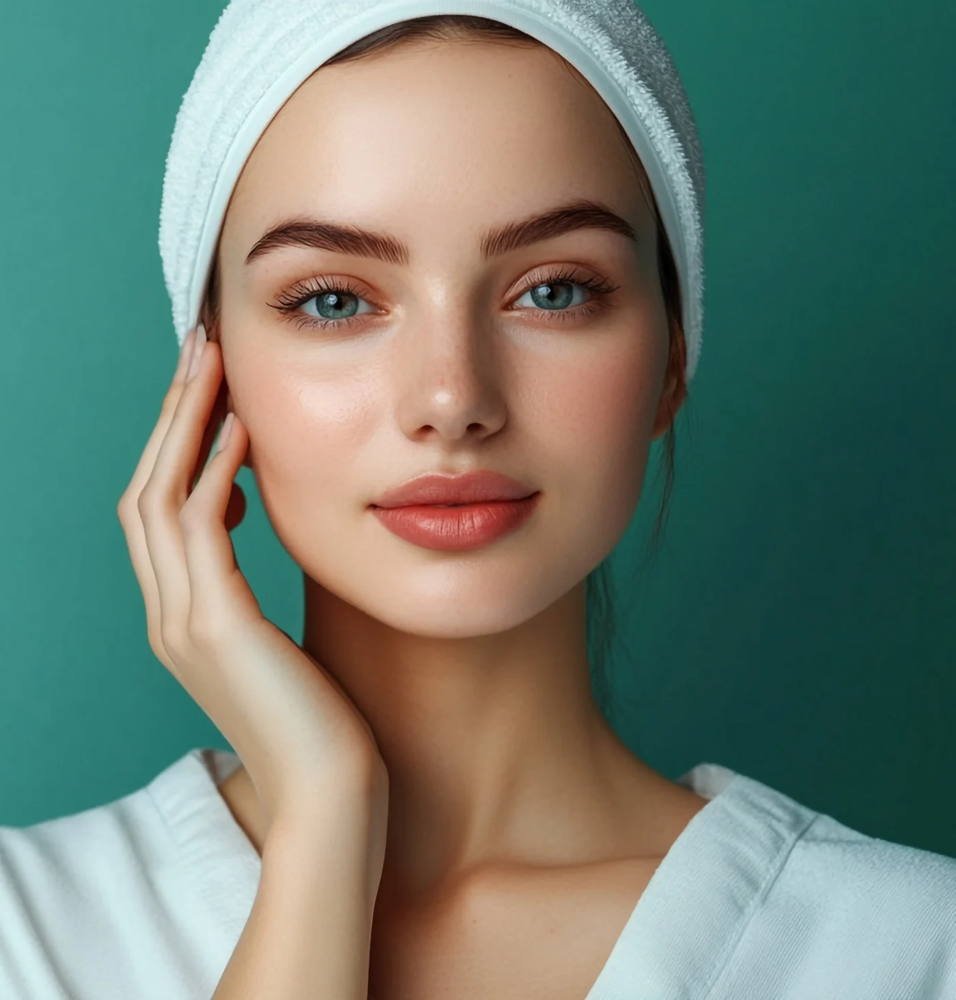
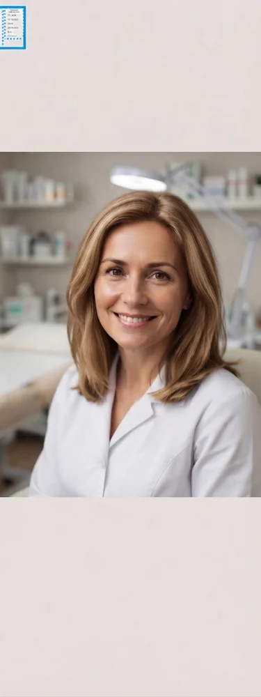

Bőrtípushoz igazodok
Minden bőr egyedi, ezért a kezelések során figyelembe veszem annak aktuális állapotát. Személyre szabott megoldásokkal biztosítom, hogy bőröd a legmegfelelőbb törődést kapja.
A szépség mindenkié
Az Eliza Beauty Salon olyan professzionális kozmetikai megoldásokat kínál, amelyek természetes hatóanyagokkal és a legmodernebb bőrfiatalító technológiákkal érnek el látványos, tartós eredményeket. Foglalj időpontot, és tapasztald meg a különbséget!
Megnézem a kezeléseket
A minőség mércéje: a visszatérő vendégek
Korábbi rossz tapasztalatok miatt sokáig nem mertem kozmetikushoz járni, de ez az itt töltött első alkalmat követően megváltozott. A bőröm minden kezelés után szinte ragyog, remekül érzem magam, és Eliza segítségével sikerült kialakítanom a helyes, bőrtípusomnak megfelelő arcápolási rutint. Szívből ajánlom!

Eliza nagyon kedves, csupaszív kozmetikus, a kozmetika csodaszép, tiszta, hangulatos, mindig örömmel járok ide vissza. Legutóbb a 10 alkalmas arcfiatalító kezelést vettem igénybe, és az eredmény magáért beszél, azóta több pozitív visszajelzést is kaptam ismerőseimtől. Csak ajánlani tudom Elizát!

Minden kezelésem a bőröd hosszú távú egészségét és szépségét szolgálja. Gondosan kiválasztott hatóanyagokkal, modern technológiákkal és személyre szabott törődéssel segítek megőrizni bőröd rugalmasságát és vitalitását.
Minden bőr egyedi, ezért a kezelések során figyelembe veszem annak aktuális állapotát. Személyre szabott megoldásokkal biztosítom, hogy bőröd a legmegfelelőbb törődést kapja.

Kíméletes, mégis hatékony eljárásokat alkalmazok, amelyek természetes módon segítik a bőr regenerálódását, így az eredmény látványos, a folyamat pedig kellemes és kényelmes.

A célom, hogy valódi, látható eredményeket kapj. Ha egy 5 alkalmas kezelés után nem vagy elégedett, visszatérítem a díj 50%-át.

A kezelések nemcsak a bőrödnek, hanem a lelkednek is szólnak. Nálam minden kezelés privát, nyugodt és egy egészen lélekfeltöltő élmény.

Sipos Eliza vagyok, az Eliza Beauty Salon megálmodója. 14 éve segítek vendégeimnek abban, hogy bőrük egészségesebb, fiatalosabb és ragyogóbb legyen.
A szépségipar mindig is a szenvedélyem volt, ezért folyamatosan fejlesztem tudásomat, hogy a legmodernebb technológiákkal és leghatékonyabb hatóanyagokkal dolgozhassak. A Beauty Academy szakmai trénereként és a kozmetikus mesterképzés elvégzése után célom, hogy minden vendégem személyre szabott, professzionális kezelést kapjon.
Nálam nincs sablonkezelés, csak valódi törődés és hosszú távú megoldások.

Vendégeimet kizárólag előre egyeztetett időpontban tudom fogadni, hétfőtől péntekig 9:00 és 16:00 között. A demó űrlapján saját adataiddal próbaüzenetet küldhetsz.

A kezelés előtt alaposan felmérem a bőröd állapotát, megismerem arcápolási szokásaidat, az eddig használt termékeidet, és ezek alapján összeállítom a számodra legmegfelelőbb kezelési tervet.

A személyre szabott terv alapján végzem el a kezelést, amelyet minden esetben egy relaxáló arcmasszázs egészít ki, hogy a bőröd felfrissüljön és a hatóanyagok még jobban beépüljenek.

A kezelést követően segítek az otthoni bőrápolási rutinod kialakításában, hogy a bőröd tartósan egészséges és ragyogó maradjon. Személyre szabott termékajánlásokkal és praktikus tanácsokkal látlak el.
Ha régóta szeretnéd visszanyerni bőröd fiatalosságát, feszességét vagy megszabadulni a makacs bőrproblémáktól, itt az idő, hogy szakértő kezekre bízd magad. A bőröd minden nap érted dolgozik, most rajtad a sor!
Időpontot kérekNem, a kozmetikámban kizárólag időpontra fogadok vendégeket.
Az első találkozás alkalmával a kezelés előtt diagnosztizálom a bőrödet, és felvázolom a kezelési tervet.
Igen, természetesen! Az első alkalmat követően elmondom, hogy mire figyelj a mindennapokban, milyen termékeket használj, hogy a bőröd a lehető legjobb törődést kapja.
Bankkártyával és készpénzzel is fizethetsz a szalonban.
Kérdésed van a kezelésekről, vagy időpontot szeretnél egyeztetni? Keress bizalommal, és segítek megtalálni a számodra legjobb megoldást!